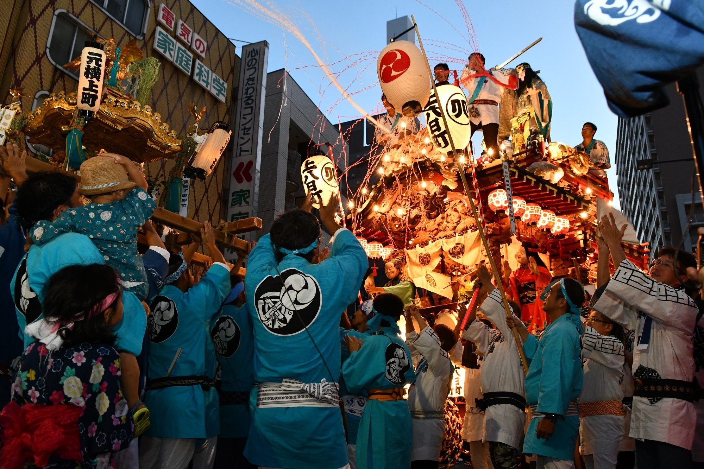

Kimono
Kimono is a traditional Japenese garment. Each kimono pattern has its own meaning and depicts something auspicious. Kimonos also express the aesthetic sense of the four seasons, and their patterns and designs represent the profound Japanese culture. Kimonos are more difficult to move around in than clothes, so they require a dignified and more elegant mannerisms and behavior than usual, such as when picking things up, walking, or sitting down.
Japanese-style meal
The appeal of Japanese food is that you can feel the seasons and enjoy delicious seasonal foods. In addition to taste, Japanese cuisine is also about the delicate beauty of the dishes, the beautiful presentation of the dishes, the hospitality of the guests, and the cooking techniques that accentuate the flavor of the food. A major characteristic of Japanese food is to make the most of the flavors of the ingredients with a minimum of seasonings such as dashi, salt, miso, and soy sauce.
Shrine
Many people visit shrines as a place to express their daily gratitude and wishes to God at annual events such as various prayers, Hatsumode (New Year's visits), and weddings. The way to visit a shrine is to first make a monetary offering, ring the bell, bow deeply twice, clap twice, pray with all your heart, and finally bow greatly once. Other rules include bowing before crossing the torii gate, avoiding the center of the path, and purifying the mouth and hands at a water fountain.
Omatsuri (festival)
Omatsuri is Japanese festival of traditional community to celebrate and giving thanks for a rich harvest, good health, community harmony and respect for their ancestors. People wear traditional Japanese happi coats and yukata, and carry portable shrines called omikoshi (portable shrines in which the sacred body is enshrined) through the town, and perform Bon Odori, a dance to honor ancestors. Other than that, this is a fun event with shooting games, goldfish scooping, many food stalls, and fireworks.
Accomplishment (Geido)
The type of traditional Japanese spirituality that is important to us is called "Geido". It is done to prepare the spirit and develop oneself through mastery. 道 (do) means best obtained by learning the same thing over and over again. It includes calligraphy(shodo), which uses a brush and ink to write letters; flower arrangement(kado), which is based on the offering of flowers to the Buddha; tea ceremony(sado), which is a condensed version of the spirit of hospitality; incense ceremony(koudo), which purifies the mind through the fragrance of the aroma; waka poetry(kado), in which the beauty of waka is enjoyed; and the martial arts(budo).
Japanese martial arts (Budo)

The four most common styles of Japanese martial arts are aikido, kendo, judo, and karate. Aikido is a martial art that is based on old jujutsu techniques and focuses on hitemi and joint techniques. Kendo is the art of training the body and mind with swordsmanship. Judo is a martial art that uses bare hands to engage an opponent, and attacks and defends by using the power of mind and body most effectively. Karate is a martial art characterized by striking techniques with the fists and feet.